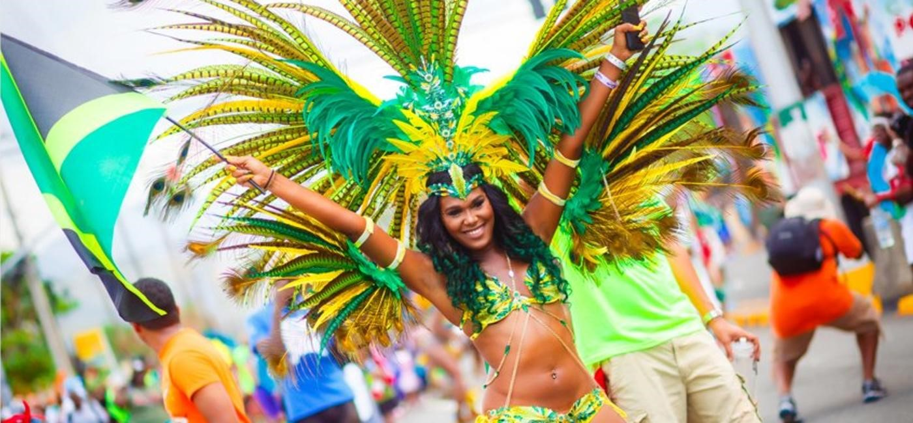
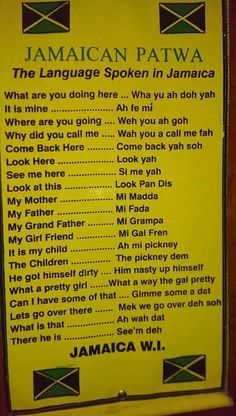
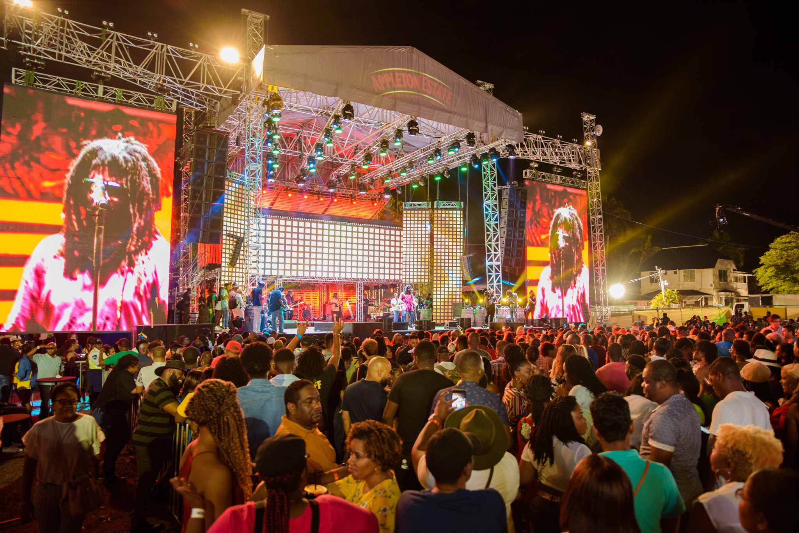

The Caribbean is a group of islands in the Caribbean Sea to the east of North America, simply known to many as paradise!
The Caribbean is known as the Island Countries, because the Caribbean isn’t a country itself, it is actually made up of thousands
of islands as many as 7000 of which there are 26 countries. Jamaican culture is unique and vibrant and is famous across the world.
From Jamaican music, dancehall and food to its arts and crafts all derived from its rich heritage.
The first things that come to mind when thinking about Jamaica is the music of Bob Marley, world famous Jerk chicken and the fastest
man on the planet Usain Bolt.
Jamaica Carnival is the place to go if you want to have a good time! It is a high energy, vibrant and colourful celebration. Filled with reggae, costumes, rum, calypso and soca music:

The Jamaican language is a dialect of broken English which is known as Patwah. However many of the Caribbean islands have their own linguistic style

Furthermore, where ever you go in the Caribbean island, Jamaica is the name most associated with the Caribbean region of the West Indies. Nevertheless, it is clearly understandable why people believe that the land of Reggae music and dancehall is the mother of all Caribbean island. Jamaica it’s one of the biggest islands in the region, and added to that, much of the culture in the smaller islands is heavily influenced by Jamaican culture, from the music, to the food. For Caribbean holiday makers, the island is the ultimate vacation spot because there are so many points of interest in Jamaica, from exploring picture perfect beaches and rare luminous lagoons, to touring famous museums, swimming in refreshing waterfalls.
